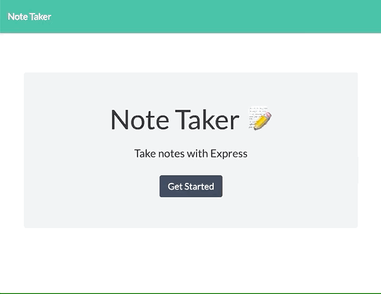
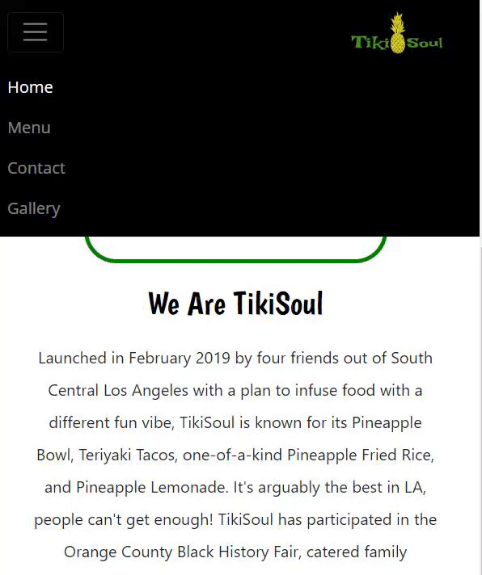

Hi, I'm Stephanie.
I like building things and making them pretty.
I like building things and making them pretty.

I used to be a librarian, which means if I don't know the answer to something, I'm really good at looking it up. I love creative problem solving, collaborating with teams, and developing technology centered on the ease and joy of the user.
I possess a Master's in Library and Information Science which means I've worked with a lot of databases and am bffs with data. I also love design, color theory, and user experience. Through completion of the program in March 2020, I am growing my development skills in a full-stack coding program at UCLA extension. This portfolio is designed to showcase my work.
Currently participating in #100DaysofCode. You can view my progress log here.
Note Taker
An application that can be used to write, save, and delete notes. Utilizes an Express backend to save and retrieve note data from a JSON file.
A command line application that dynamically generates a PDF from a GitHub username. Utilizes Axios, Inquirer, Util, Open, and Electron-html-to running in nodeJS
A Node CLI that takes in information about employees and generates an HTML webpage that displays summaries for each team member. Utilizes Inquirer, Util, and Jest for testing.
Website Design
This web application is a site designed for a client that runs their own food truck business. On this site, users can view a live map of where the food truck will be, view the menu, view a gallery of offerings, and contact the owners of the food truck. This site is designed to be responsive and mobile-friendly.